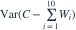

桥承载力C独立于所有车辆，。有10辆车，每辆重量方差为1，任意不同两辆的协方差为0.2。则

是？- A
- B
- C
- D

我已思考，展开答案与解析
正确答案：B
- 总重量方差为 。
- C独立于总重量，故差的方差 。
易错提醒“桥与车辆独立”不等于“车辆相互独立”，协方差项不能省略。
考后回忆 · 条件重建 · 回忆2的独立性辨析
依据考试回忆重建；数字、选项和必要条件为补充设定，非原题。

是？考后回忆 · 条件重建 · 回忆2的独立性辨析
依据考试回忆重建；数字、选项和必要条件为补充设定，非原题。